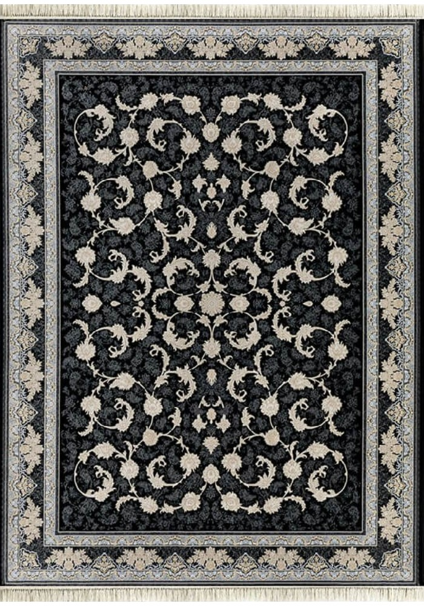

فرش ماشینی ۱۲۰۰ شانه
فروش فرش ماشینی و فرش کلاسیک در شهرفرش همراه با تضمین قیمت و تضمین کیفیت امکان خرید فرش به صورت اقساطی امکان خرید انلاین فرش در شهرفرش فرش ماشینی فرش تافته سپنتا(محتشم) طرح باران سیلور، ۱۵۰۰شانه تراکم ۴۵۰۰ جهت خرید انلاین فرش باشماره ۰۲۱۴۸۰۶۲ تماس حاصل نمایید